Build-a-Bear
We re-engineered class enrollment for UC Berkeley students to alleviate a lot of unnecessary pain.
TeleBEARS (named after telephone enrollment) was Berkeley's enrollment system ever since 1991, and for the better part of a decade we've been using a slow, inflexible, digitized version of it that looks like very, very Web 1.0. Saying the word "TeleBEARS" was enough to make any Cal student recoil.
Berkeley rolled out a new solution based on old Oracle/PeopleSoft software that somehow managed to make it worse. Screens would freeze, time out, not have back buttons, have strange information hierarchies... so my friends and I set out to remake it to be usable in the year 2016.
I worked on this with two of my friends during downtime from work - from ideation to release, it took a grand total of two weeks during the summer. Not a bad sprint! We released it to our friends to glowing praise, and it's now open to be used by the public.
UPDATE: The Chrome extension is here!
Berkeley rolled out a new solution based on old Oracle/PeopleSoft software that somehow managed to make it worse. Screens would freeze, time out, not have back buttons, have strange information hierarchies... so my friends and I set out to remake it to be usable in the year 2016.
I worked on this with two of my friends during downtime from work - from ideation to release, it took a grand total of two weeks during the summer. Not a bad sprint! We released it to our friends to glowing praise, and it's now open to be used by the public.
UPDATE: The Chrome extension is here!

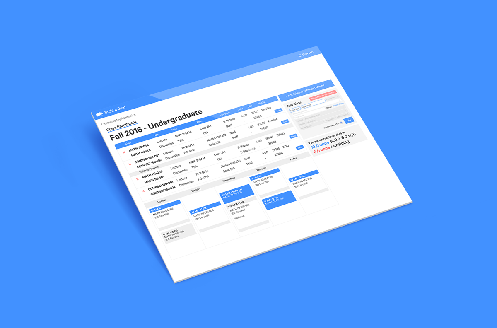
Problems
TeleBEARS was no friend of ours, but it worked. The new system for enrollment was baked into a registration/student info 'hub' called CalCentral. I'll reserve judgment for CalCentral because it was greenfield (we didn't have a centralized hub like it before). Registration for classes, rendered incredibly important due to the lottery system, was tucked away at the bottom of a page that was already three clicks deep.
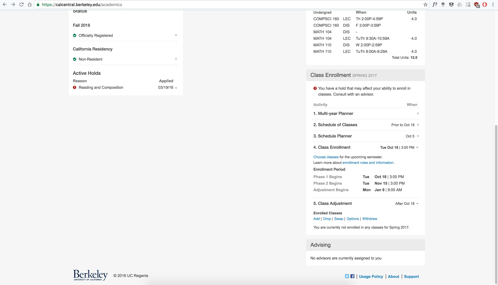Can you even see where to click? It's the 'Add' button and the ones next to it all the way at the bottom near Class Adjustment. Aside: the hold on the page isn't even supposed to be there for me, I cleared it months ago!
But you say - it'll be fine once you get into the menus, right? Nope - this is what it looked like once you clicked 'add'.
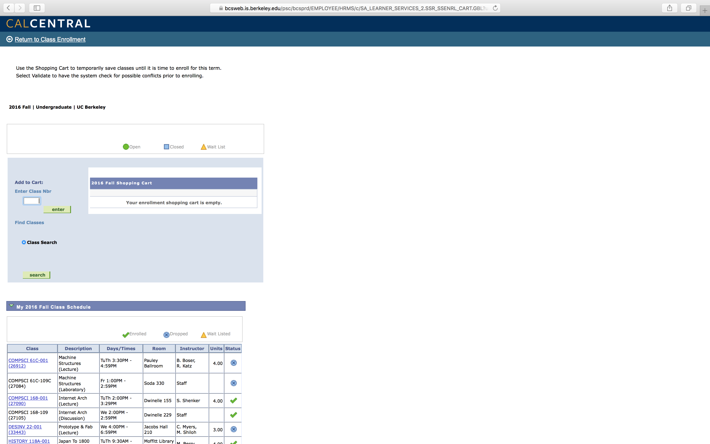Yes, everything occupies this small of a screen segment. You might also notice that there's no 'validate' button as mentioned in the text. Thanks to Ben for the screenshot.
To enroll in a class, you have to either a) know the class code by heart or have it written down, or b) go through a laborious class search that involved multiple different pages and had mandatory search fields that actually made finding the class code even more difficult.
After you'd found the class you wanted, chose the right permutations and adjunct sections, you could add it to your 'shopping cart'. When you lottery-determined appointment time came around, you could select the classes you wanted to enroll in from the cart and 'enroll' in them, at which time it'd ask you again for all of the details. "Hard to use" would be an understatement!
Clearly, option a) violates a ton of usability heuristics (Nielsen). There's poor flexibility and efficiency of use, total reliance on recall over recognition, and limited use control and freedom. Option b) is no better, as you'll see in the screens below.
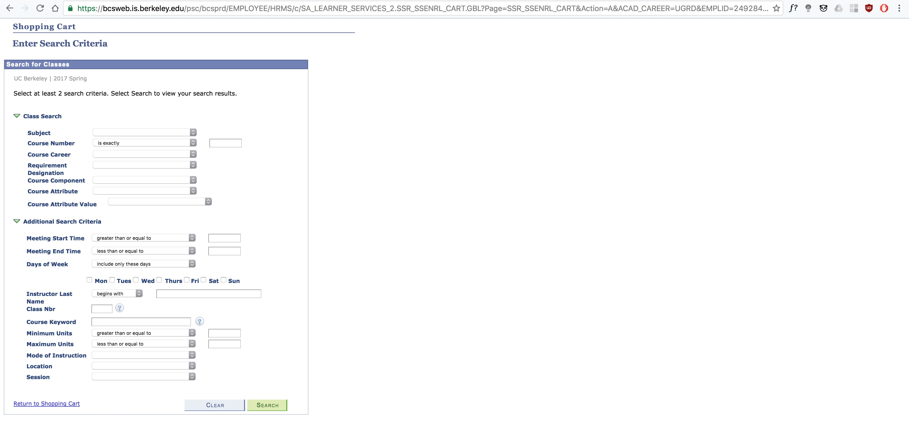The search screen bombards you with information, even though you need a 'minimum of two' fields - what if I want to see every class a department offers?
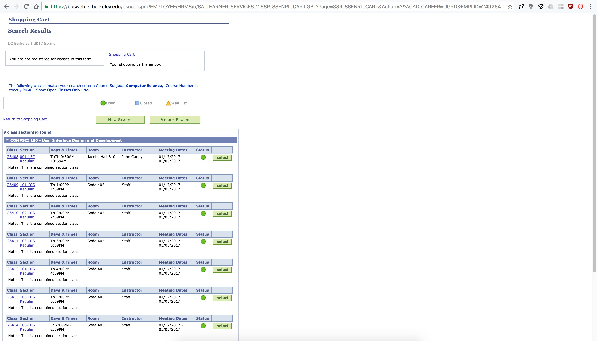This is everything that's returned upon searching for a class I had in mind. DIS classes are adjunct to lecture sections and are add-ons to them!
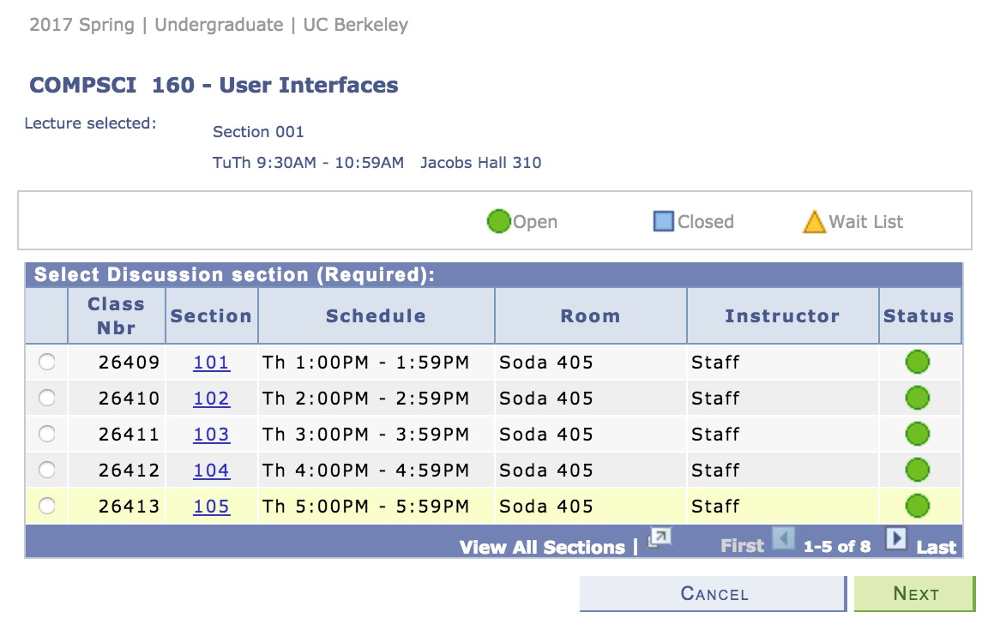Why is there a key when iconography should be self evident; and why are there only 5 options per page? The rows themselves aren't clickable either, only the radio buttons.
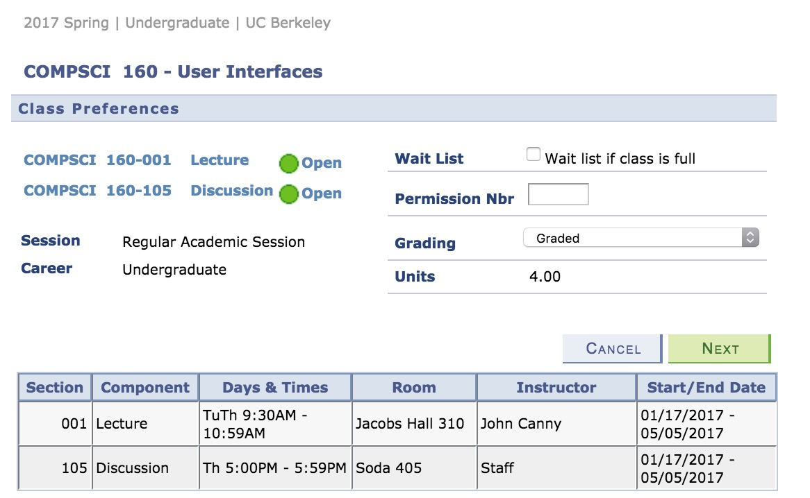Here are more parameters with some system text that doesn't really mean anything to the student. Start/end dates don't really mean anything because no classes (I've looked) start or end midway through a semester.
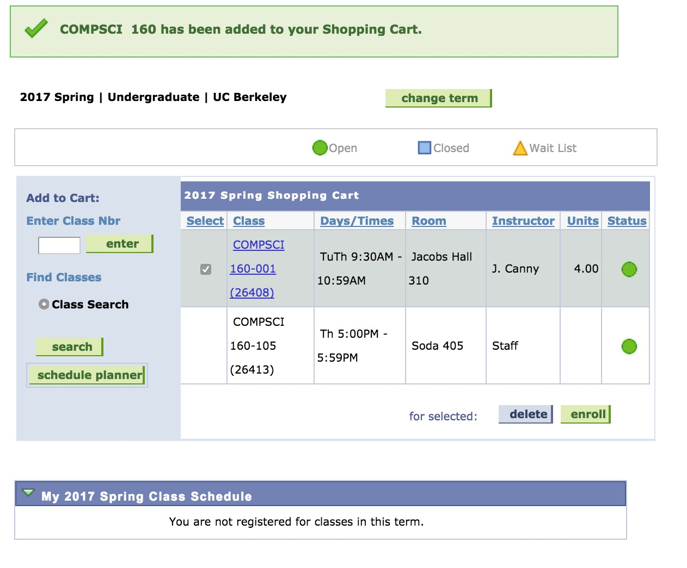Congrats! You've added it to your cart! Now when you actually want to add the course, you'll go through this dialogue again when you select it from your cart to enroll in.
On top of this - there's no tool that takes your enrolled classes and generates a graphical schedule! Third-party sites that had since been discontinued due to school influence provided that invaluable service; for the first few weeks of every semester, I'd screenshot the schedule and make it my phone background so I wouldn't forget about my class times.
Dropping classes and swapping sections weren't easy either. I'll spare you the screens (I'd be happy to walk you through them in person), but trust me, they're doubly long and similarly unintuitive. Add on incredibly long load times, obscure and non-returnable URLs, freezes and 10-minute authentication timeouts, and it made for a pretty miserable enrollment experience.
So we set to work!
Solutions
We decided initially that we wanted the experience to be as simple as possible. We interviewed 10 of our good friends who had similar enrollment time slots for their thoughts, and recorded them going through the process on their own.
Across everyone, we got the same main points:
"There's a lot of screens, clicking and waiting."
Adding a class shouldn't take 10+ minutes!
"I want to be able to see my schedule and add it to a calendar."
I can identify with this one - I add all my classes to my Google Calendar manually, and it's very tedious.
"The shopping cart system is a bit redundant - I know which classes I have to take already."
The school advises students to do adequate research and academic planning prior to actual enrollment, and often class numbers are released late enough that a cart is infeasible.
"Looking at it hurts my eyes."
Fair enough.
After doing some brainstorming on our own, we decided that we would be producing a single-pager app with an add class modal that enabled you to search through every single class in a dropdown list, giving you relevant info (time, professor, location, units, registration status) and instantly alert you of conflicts in timing or going over a unit cap. There was also no good way of telling how many units you were enrolled in - so we wanted the display to reflect that as well. The representation of enrolled classes was to take up most of the screen, and dropping/swapping sections should be available in context of each class, as it was almost always a one-off action.
Implementation
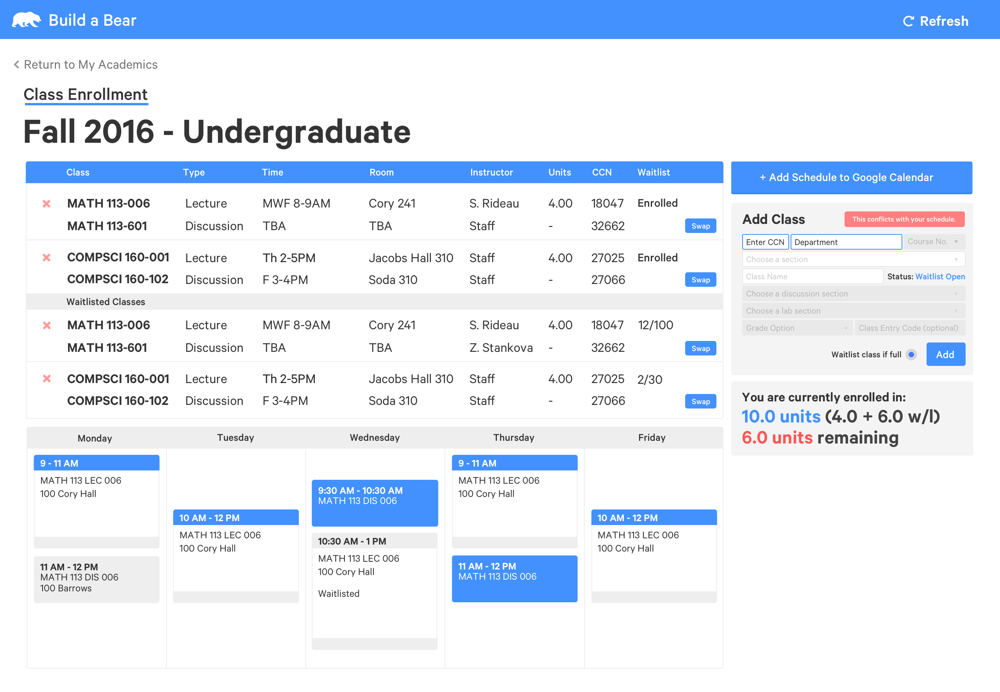What I came up with in the end.
I started off putting together all the relevant pieces modularly in Sketch. I usually go for a pen and paper approach first, but since all the data was digital and pixel-precise, I decided to first try laying out elements digitally.
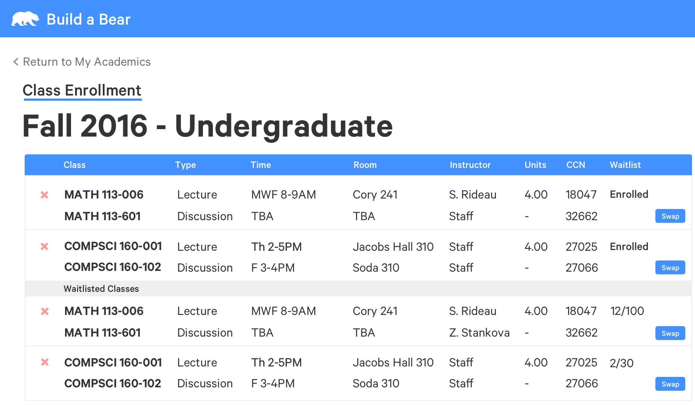The 'courses' part of the screen.
I started with this section first. The most important visualization was that of what classes you were actually enrolled in. In this case, it was just a matter of the right table format. I organised the information in terms of importance in hierarchy (left-right visual extremes taken up by most important information and CTAs, logistical info in the middle). Aside from that, I ended up going with Calibre, a very readable humanist typeface for maximum clarity. I added in a divide between waitlisted classes and enrolled classes - there's a big difference in how they're treated by the internal system, so that helped to alleviate confusion.
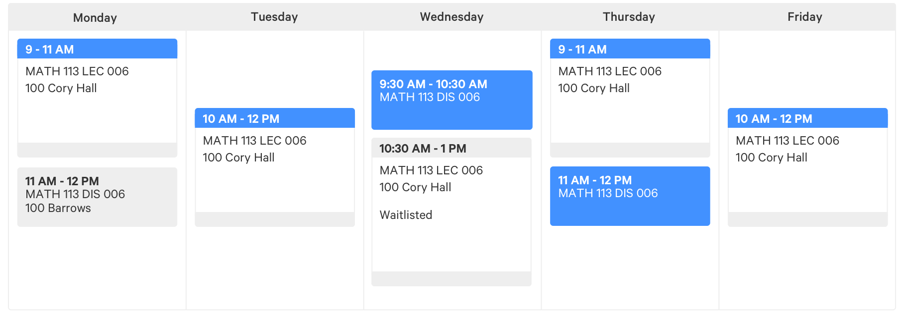A schedule autogenerated from the classes you're enrolled/waitlisted in, on the same page.
The schedule followed as a logical progression from the list of classes. I followed a pretty traditional 5-column table format, and set pixel heights to correspond to every hour, so it was modular enough. Grey entries in the calendar indicated waitlisted classes, while being recognizable enough as class entries themselves.
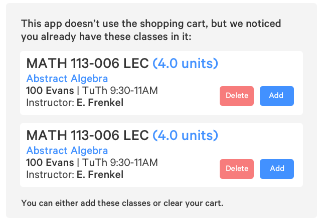
An edge case dialogue.
We architected the app such that users didn't go through a shopping cart - they just added the class in the add class modal, and it skipped the inbetween steps for the shopping cart, which made it usable day of an appointment. As there were no penalties for adding classes and removing them, we removed the friction for the user in this regard. All that saving in a shopping cart did for the user was hold a class, not adding any value. Instead, we made all the data show upfront, making it possible to add/drop a class without having to read through the schedule or a shopping cart.
However, I had to consider the edge case of if a user already had classes in their shopping cart. I came up with the modal above, and the user could either add the course instantly, or remove it from their cart. It's designed to look somewhat clashy and 'heavy' so the user is drawn to resolving it.
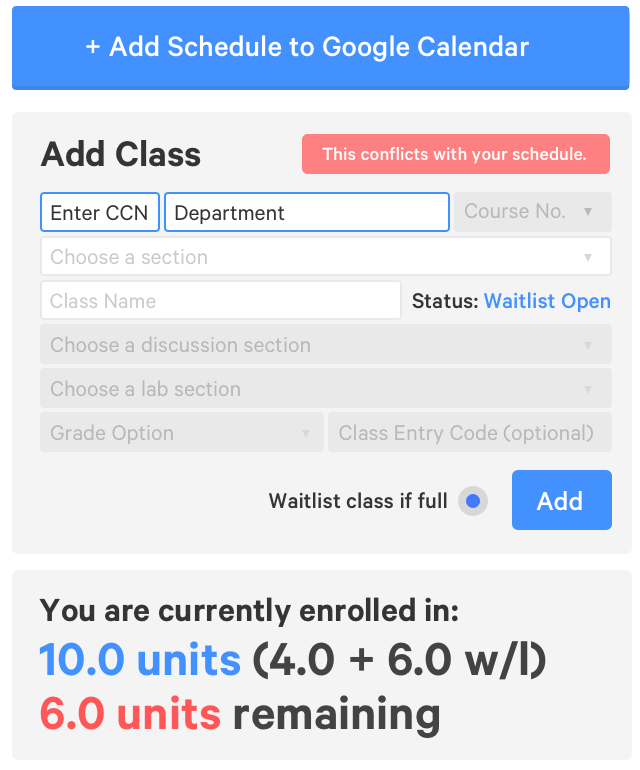
The add class modal - the big one!
I left the heftiest for last. The add class modal, in effect, was supplanting 6 separate pages of PeopleSoft software. Through matching class codes (CCNs) and a JSON we compiled for the entire course catalog, we sifted through all of the relevant info (class name, location, professor, etc) and returned all relevant data in a dropdown dialogue. I can show you this running in person! What our code did was essentially submit a search query for department/class code, and then each subsequent field after that, and return it all in a dropdown so users could compare them realtime, instead of adding them all to a shopping cart.
I opted to restrict further progression as random field entry as it messed with our query logic - but from a behavioral standpoint, the user will either know a) the CCN of the course exactly and have it written down somewhere or b) the class department and number, not necessarily the full name, etc. When 'Department' and 'Course No.' were filled in, the other fields would sequentially be accessible if necessary. Some classes were lecture only, some had two sections, some had one. Interestingly, some departments in the school are doubly listed - COMPSCI or Computer Science, for example, were two valid 'departments' in the internal list of classes. As such, we had to manually map a lot of departments.
The unit display was just a useful reminder of how many the user was enrolled in. Each college within the university (College of Letters & Science, College of Engineering, College of Chemistry etc.) had a different amount of units necessary to be a full-time student, and the system didn't allow us to pull that data, so we stuck with phase limits instead. Every 'phase' of enrollment, a student can sign up for an allotted amount of units (10.5 in Phase 1, 16 total in Phase 2). This being in the same general region as the add class modal made it easy to track how heavy your course load is.
The "Add to Calendar" button renders the calendar as a .csv file, which can be imported directly into a Google Calendar. We linked to a Zendesk help page for instructions, as they'd done it very concisely and clearly.
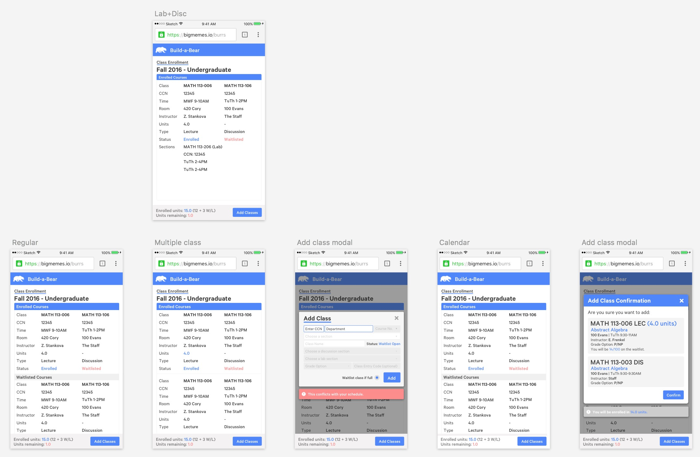
Early mobile screens for responsive design.
We're currently working on making a mobile version accessible, after discovering though interviews that a lot of people do their enrollment on their phones. Here's some screens of a prospective flow.
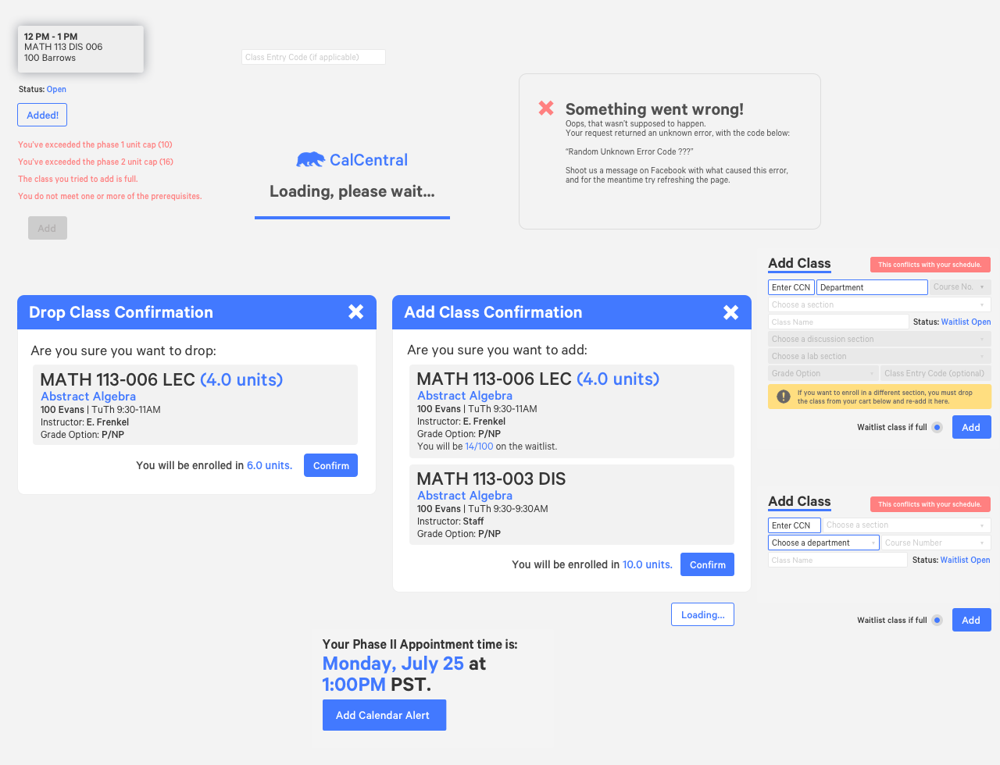
Dialogs and edge cases.
UPDATE (October 18th 2016): Our Chrome extension is here!
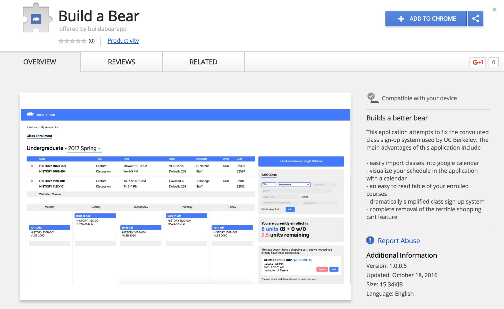
Available here!
So far, around 300 people have used Build a Bear to add classes and modify their schedule. We're pushing it out to the whole campus community ASAP as registration looms near for next semester!
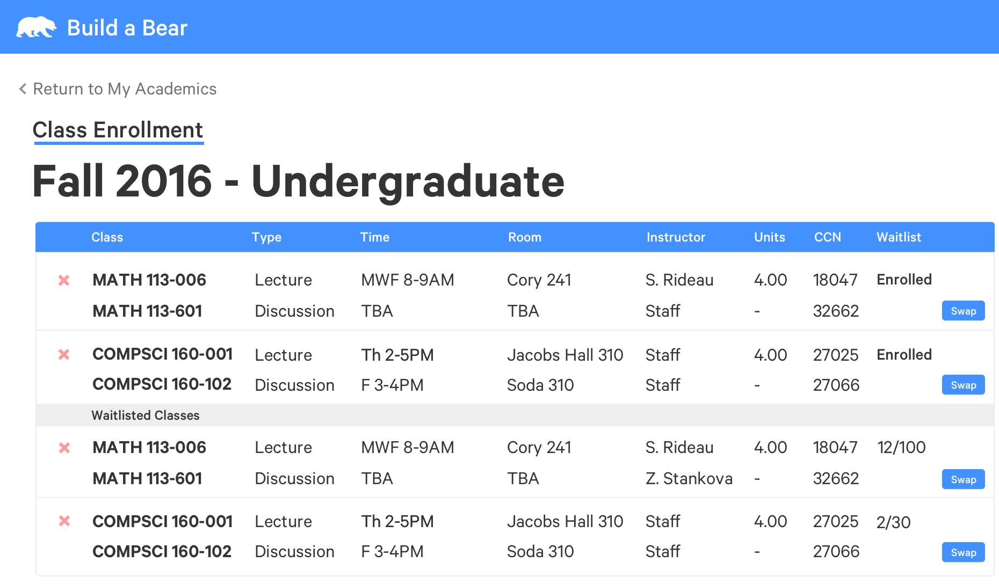The 'courses' part of the screen.
I started with this section first. The most important visualization was that of what classes you were actually enrolled in. In this case, it was just a matter of the right table format. I organised the information in terms of importance in hierarchy (left-right visual extremes taken up by most important information and CTAs, logistical info in the middle). Aside from that, I ended up going with Calibre, a very readable humanist typeface for maximum clarity. I added in a divide between waitlisted classes and enrolled classes - there's a big difference in how they're treated by the internal system, so that helped to alleviate confusion.
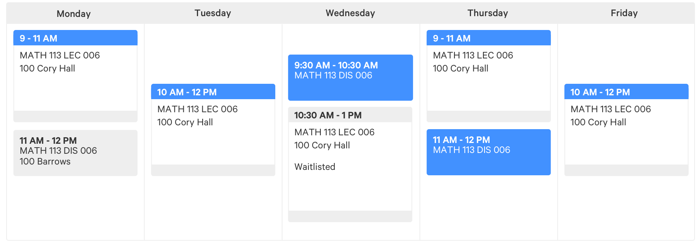A schedule autogenerated from the classes you're enrolled/waitlisted in, on the same page.
The schedule followed as a logical progression from the list of classes. I followed a pretty traditional 5-column table format, and set pixel heights to correspond to every hour, so it was modular enough. Grey entries in the calendar indicated waitlisted classes, while being recognizable enough as class entries themselves.
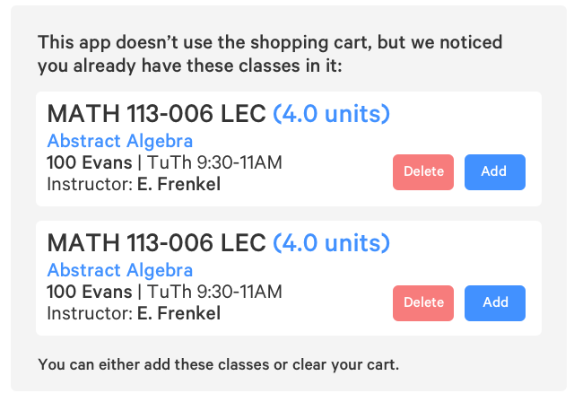
An edge case dialogue.
We architected the app such that users didn't go through a shopping cart - they just added the class in the add class modal, and it skipped the inbetween steps for the shopping cart, which made it usable day of an appointment. As there were no penalties for adding classes and removing them, we removed the friction for the user in this regard. All that saving in a shopping cart did for the user was hold a class, not adding any value. Instead, we made all the data show upfront, making it possible to add/drop a class without having to read through the schedule or a shopping cart.
However, I had to consider the edge case of if a user already had classes in their shopping cart. I came up with the modal above, and the user could either add the course instantly, or remove it from their cart. It's designed to look somewhat clashy and 'heavy' so the user is drawn to resolving it.
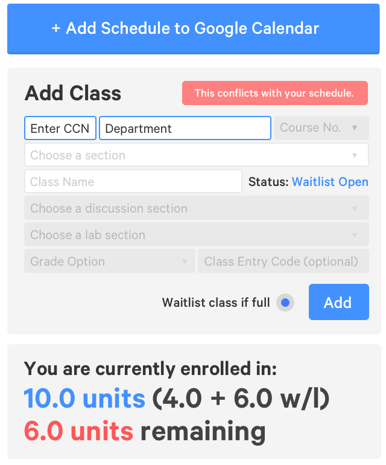
The add class modal - the big one!
I left the heftiest for last. The add class modal, in effect, was supplanting 6 separate pages of PeopleSoft software. Through matching class codes (CCNs) and a JSON we compiled for the entire course catalog, we sifted through all of the relevant info (class name, location, professor, etc) and returned all relevant data in a dropdown dialogue. I can show you this running in person! What our code did was essentially submit a search query for department/class code, and then each subsequent field after that, and return it all in a dropdown so users could compare them realtime, instead of adding them all to a shopping cart.
I opted to restrict further progression as random field entry as it messed with our query logic - but from a behavioral standpoint, the user will either know a) the CCN of the course exactly and have it written down somewhere or b) the class department and number, not necessarily the full name, etc. When 'Department' and 'Course No.' were filled in, the other fields would sequentially be accessible if necessary. Some classes were lecture only, some had two sections, some had one. Interestingly, some departments in the school are doubly listed - COMPSCI or Computer Science, for example, were two valid 'departments' in the internal list of classes. As such, we had to manually map a lot of departments.
The unit display was just a useful reminder of how many the user was enrolled in. Each college within the university (College of Letters & Science, College of Engineering, College of Chemistry etc.) had a different amount of units necessary to be a full-time student, and the system didn't allow us to pull that data, so we stuck with phase limits instead. Every 'phase' of enrollment, a student can sign up for an allotted amount of units (10.5 in Phase 1, 16 total in Phase 2). This being in the same general region as the add class modal made it easy to track how heavy your course load is.
The "Add to Calendar" button renders the calendar as a .csv file, which can be imported directly into a Google Calendar. We linked to a Zendesk help page for instructions, as they'd done it very concisely and clearly.
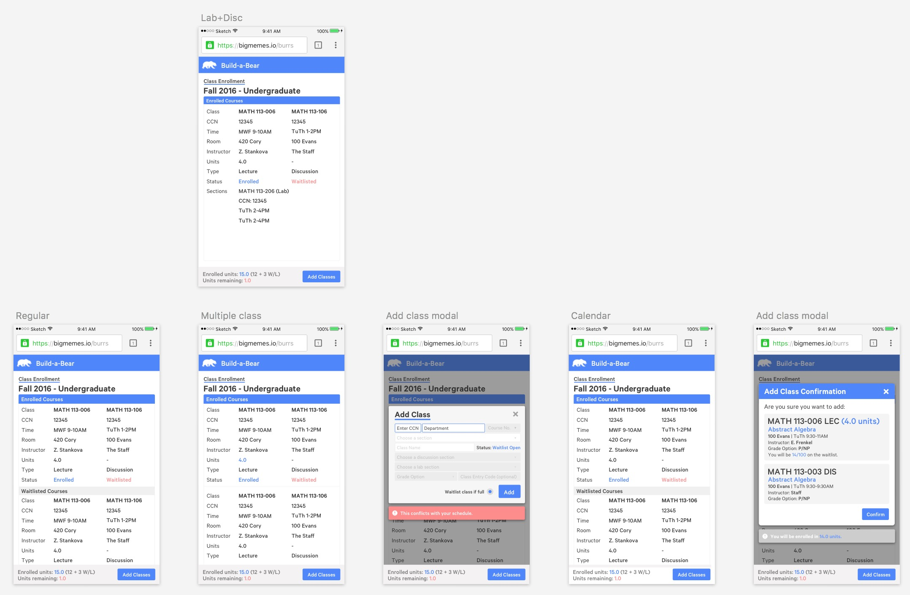
Early mobile screens for responsive design.
We're currently working on making a mobile version accessible, after discovering though interviews that a lot of people do their enrollment on their phones. Here's some screens of a prospective flow.
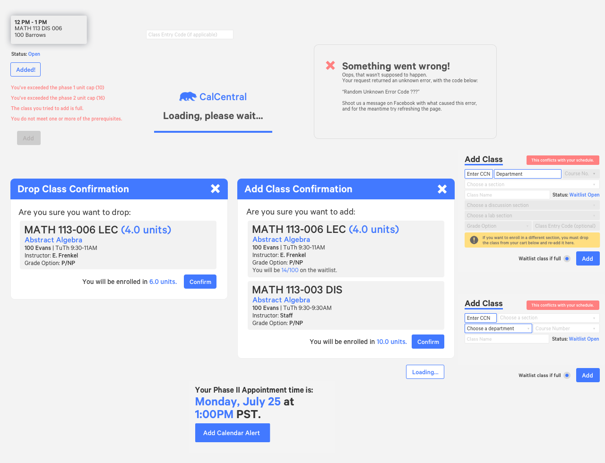
Dialogs and edge cases.
UPDATE (October 18th 2016): Our Chrome extension is here!
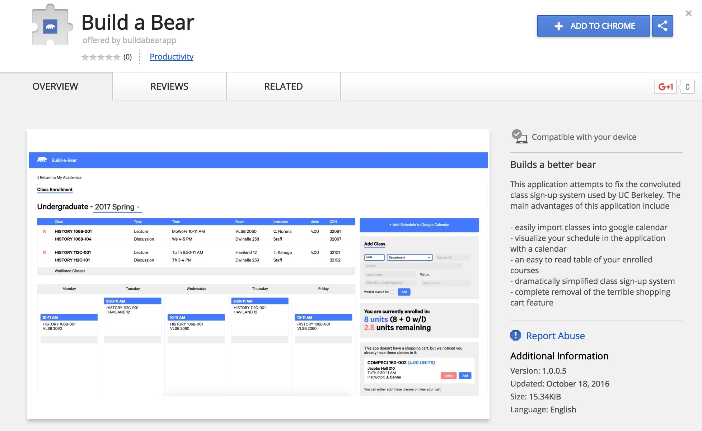
Available here!
So far, around 300 people have used Build a Bear to add classes and modify their schedule. We're pushing it out to the whole campus community ASAP as registration looms near for next semester!